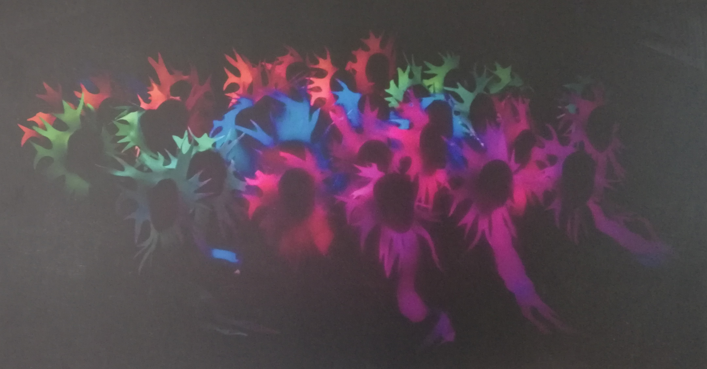

María Luz Sánchez Silva COAUTORIA Antonio Villafranca Alberca
En la imagen aparece una microcápsula dañada que contiene un material de cambio de fase, es decir, una parafina. La cubierta, formada por un polímero de urea-formaldehido, se ha dañado y deja evidencia de su interior. Estas microcápsulas se producen para ser empleadas como almacenamiento de calor, de forma al sobrepasar la temperatura de cambio de fase de la parafina pasa de estado sólido a liquido absorbiendo su calor latente. Y al disminuir la temperatura externa con respecto al punto de cambio de fase de la parafina, esta solidifica cediendo calor. Por tanto, presenta un efecto termorregulador en los sistemas donde se incorpore como son tejidos, sistemas de refrigeración y construcción EQUIPO FOTOGRÁFICO Microscopio electrónico de barrido Phenom ProX
Paula Constantin Felipe
Todo comienza y termina con las neuronas: desde tus sentidos hasta los nervios que controlan tus músculos Todo lo que sientes, recuerdas o sueñas está escrito en estas células. El cerebro tiene cerca de 100.000 millones de neuronas que se organizan formando circuitos. Alumnos de Educación Infantil representan mediante un teatro de luz negra los descubrimientos de los Premio Nobel de Medicina Santiago Ramon y Cajal y Golgi a principios del siglo XX acerca del funcionamiento de las neuronas. La técnica del teatro negro utiliza lámparas de luz ultravioleta sobre un escenario revestido de negro, resaltando los colores fluorescentes, La fluorescencia tiene lugar cuando una sustancia emite luz visible al absorber radiación de una longitud de onda menor. Y todo esto nos conduce hasta el año 2008, con el Premio Nobel de Química concedido a tres cientificos (Shimomura, Chalfie y Tsien) por el descubrimiento de lo que se conoce como proteina verde fluorescente (GFP). Hoy en dia estas moléculas tienen múltiples aplicaciones en la investigación, entre otras el estudio del cerebro y los circuitos neuronales. EQUIPO FOTOGRAFICO Nikon D7200 Nikon 35mm